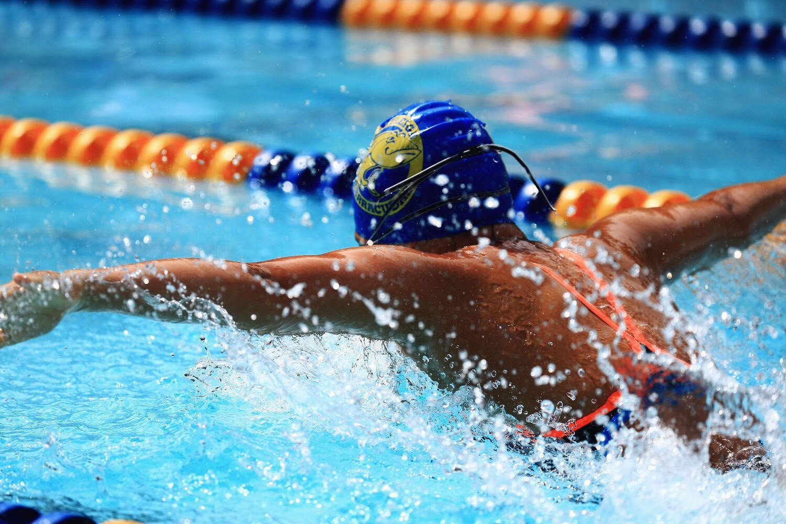

My Bio: My name is Juliana Ruby Parra and I am a rising junior
at Wootton High School in Maryland. I love swimming, reading, photography, music,
typography and calligraphy, graphic design, and
web development (my reason for doing this extra project)! I'm also ethnically mixed as well as gay so LGBTQAI+, feminine, and ethnic issues are very important to me.
Likes and Dislikes: My music taste definitely varies but I tend
to lean towards jazz and chill pop/hip hop (a strange range, I know). The only music genre I
really dislike is country. My favorite types of food are Dim Sum, Pho, Sushi, and Mediterranean.
Academically, I love my English and Spanish classes but not my math and science classes as much. I wish I did and I hope that it'll change!
Fun Fact: I lived in Asia (Hong Kong and Bangkok, Thailand)
until I was 6. I want to live abroad for my career, preferably in a Spanish-speaking country so I can apply my Spanish skills. I'm currently looking into a gap year abroad between high school and college! :)
My Favorite Websites:
This is my happy playlist on Spotify! I use Spotify every day, several times a day. Music is pretty much my entire life.
Reach for the Wall is a swim blog I use all the time to track my competitors' times as well as compare my own- all I have to do is search a name! It's also great for local swimming news (Katie Ledecky is a frequent subject).
Tumblr is my favorite social media site- I love using it for fashion inspiration.

I tried to add spoken explanations for my photos to make the site more accessible for the visually impaired/blind but I'm not sure if they're any better than captions. Caroline and Caylenne's websites were my favorites because they had really cute and funny themes and seemed really well planned out. I love coding in HTML so the entire experience of creating this portfolio was super fun for me! With that said, positioning of pictures within pages always seems to give me a hard time so that's what I'm most proud of in my site.